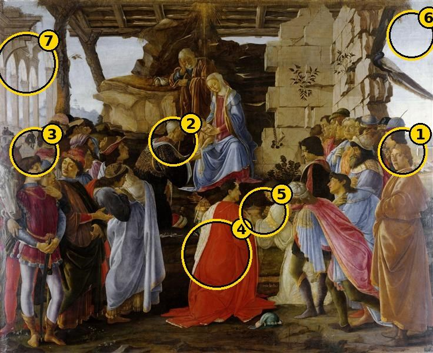

Hidden in the Frame · Uffizi Gallery, Florence
Adoration of the Magi
Sandro Botticelli · c. 1475 · Tempera on panel · Room 10–14

The story
The painting was commissioned by a money-changer with a dubious reputation for his funeral chapel in Santa Maria Novella. To win favour with the most powerful family in the city, he had the Medici painted as the holy kings. The three Wise Men from the East are Florentine bankers here. Three years later, one of the young Medici was murdered in the cathedral – the painting shows the family at the height of its fortune.
Details to look for
- On the far right stands a young man in a yellow cloak, the only one looking straight at us. This is Botticelli himself. He is not worshipping, he is looking at us, as if to say: “I made this.” An early, very self-confident artist's self-portrait.
- The old man kissing Jesus' feet is Cosimo de' Medici, founder of Medici power. He had been dead for over ten years when this was painted – here he kneels, very close to God.
- The young man with the sword on the left is thought to be Lorenzo the Magnificent, the future ruler of Florence. He stands at the edge, confident, armed – the family's future.
- The king in the red cloak in the centre is Cosimo's son Piero. His cloak is the brightest spot in the whole picture: he is the current head of the family.
- The kneeling king in white is Giovanni, another son. Three generations of Medici kneel before the Christ Child.
- At the top right a peacock sits on the wall. People believed its flesh never decayed – it stands for immortality.
- On the left and behind: ruins of ancient buildings. The old, pagan world is crumbling, and the new one is born among its rubble.
What it says
Religion and politics in one: the Medici place themselves in the middle of the sacred scene, as if appointed by God. And the painter stands confidently beside them.
Open the full guide – zoom, audio guide, German & Japanese →